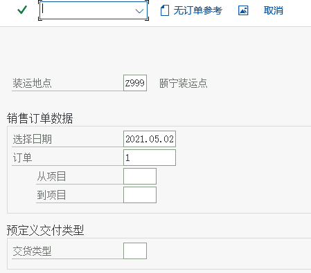
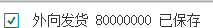

流程 ② 外向交货与发货过账（局部详解）
VL01N 创建 · 起运点 · 拣配 · VL02N 发货过账（601）· 库存与会计
1. 交货解决什么
| 问题 | 交货怎么回答 |
|---|---|
| 发什么、发多少 | 行项目与数量（可少于订单数量＝部分交货） |
| 从哪发 | 起运点（由工厂 + 运送条件决定）+ 拣配库存地点 |
| 什么时候发 | 交货日期 / 计划交货日期 |
| 仓库要做什么 | 拣配（Picking）：实际取货并确认数量 |
| 什么时候算真正出库 | 发货过账（PGI）：移动类型 601，产生物料凭证 |
一句话记住顺序交货只是「计划发货」，发货过账才是「真的发货」。在库存和财务上，交货单创建时什么都没变；点下发货过账，库存才减少、成本才发生。
2. 创建交货（VL01N）
教材菜单路径（创建外向交货）后勤 → 销售和分销 → 装运和运输 → 外向交货 → 创建 → 单个凭证 → VL01N
| 输入 | 说明 |
|---|---|
| 装运点 Shipping Point | 从工厂与运送条件推出来；教材场景是 Z999 颐宁装运点 |
| 选择日期 / 交货日期 | 决定哪些订单行可以被选中交货（教材场景 2021.04.15） |
| 销售订单号 | 输入要交货的订单；系统列出可交货的行 |

{kind=link}


交货画面逐字段读法（教材环境的实测画面）
| 字段 / 按钮 | 教材场景值 | 读法 |
|---|---|---|
| 外向交货号 | 80000000 | 系统按编号范围生成 |
| 凭证日期 | 2021.04.15 | 单据日期（与交货日期不是一回事） |
| 送达方 | 10000000 远东造船厂 / 枫桥路 / 116088 辽宁，大连 | 来自客户主数据的送达方地址 |
| 项目 / 物料 / 工厂 / 库位 | 项目 10、F999-100、工厂 P999、库位 003 | 库位由后台「分配拣配地点」决定（Z999 + P999 → 003） |
| 交货数量 / 拣配数量 | 120 PC / 120 PC | 拣配页签里回填实际拣到的数量 |
| 拣配状态 | A 尚未拣配 | 拣配完成后会变为「完全拣配」 |
| 按钮「过账发货」 | — | 发货过账（PGI）就是在这里点；点了才真正出库 |
课堂上让学员念出来的三句话① 交货号
80000000、② 拣配状态 A（还没拣）、③ 库位 003。然后问：「现在库存减了吗？」——没有，要点「过账发货」。3. 拣配（Picking）
拣配＝仓库按交货单去取货，并把实际取到的数量回填（拣配数量）。这一步可以由仓库人员用VL02N 做，也可以用拣配清单/移动设备。拣配后交货单的「拣配状态」更新。
| 拣配相关字段 | 含义 |
|---|---|
| 拣配数量 Picked Quantity | 实际取了多少（可以与交货数量不同） |
| 库存地点 Storage Location | 从哪个库存地点取（由后台「分配拣配地点」确定） |
| 批次 / 序列号 | 如果物料是批次管理或序列号管理，拣配时要指定 |
| 拣配状态 | 未拣配 / 部分拣配 / 完全拣配 |
4. 发货过账（Post Goods Issue, PGI）
这一步是整个流程的分水岭
点下「发货过账」后：
- 系统按移动类型 601 生成物料凭证；
- 库存数量与金额同时减少（出库）；
- 交货单的发货状态变为「已完成」；
- 此时这张交货才「可开票」——发票要等这一步。
撤销要用 VL09（取消发货过账），不能删单据了事。
5. 对库存与会计的影响（对照着理解）
| 影响对象 | 创建交货时 | 发货过账后 | 查看工具 |
|---|---|---|---|
| 库存数量 | 不变 | 减少（移动类型 601 出库） | MMBE / MB52 / MB51 |
| 物料凭证 | 无 | 生成一张物料凭证 | MB03（用凭证号）/ MB51 |
| 交货状态 | 未发货 | 发货状态：已完成 | VL03N |
| 会计影响 | 无 | 成本出库（CO 侧销货成本相关） | 物料凭证的会计凭证视图 / CO 报表 |
| 发票 | 不可开票 | 可开票（进入 VF01 的可开票清单） | VF01 / VF04 |
现场必背「库存什么时候减？」= 发货过账（601）。「什么时候能做发票？」= 发货过账之后。「发货过账错了怎么办？」=
VL09 取消（并按顺序处理后续单据）。6. 真实画面汇总
{kind=link}


本轮实训可能遇到的坑教材任务 48 记录了几个真实错误，本站在 分析页 第 4 节汇总：「非当前业务交易组」「作业类型无法设置」「CLIENT COPY 不完整」等——这些都是 环境/配置没配全导致的，不是操作错。遇到时先看报错里的 T-code 与消息号。
7. 排错与自检
| 现象 | 可能原因 | 怎么查 |
|---|---|---|
VL01N 输入订单号后没有可交货的行 | 订单行不允许交货 / 已完全交货 / 已拒绝 / 日期范围不对 | 订单行状态页签；VL01N 的不完整日志；订单类型的交货相关设置 |
| 提示没有库存 | 库存不足或库存被其它单据占用 | MMBE / MD04 / CO09；对策：入库（501/101） |
| 找不到装运点 | 工厂没分配起运点，或运送条件/装载组不匹配 | 后台「给工厂分配起运点」；客户与物料主数据里的运送条件/装载组 |
| 发货过账后库存没变 | 看错了库存类型/批次，或过账失败 | MB51 查该物料当天凭证；VL03N 看发货状态 |
自检问题
- 创建交货和发货过账，哪个会生成物料凭证？移动类型是多少？
- 部分交货时，订单的「交货状态」显示什么？后续还能再交吗？
- 发货过账后发现发错货，按什么顺序处理？
- 下一页：开票 —— 收钱的部分。
- 实训任务：任务 3 交货与发货过账。